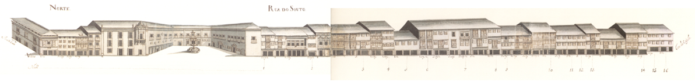

Rua do Souto, Porta do Souto - vista norte.

Rua do Souto, Porta do Souto - vista sul.
Rua chave de todo o urbanismo e vida económica bracarense, a rua do Souto , terá sido, pelo menos desde o séc. XVII, a mais importante da cidade.
Quando se construiram as muralhas de Braga pensou-se logo no possível crescimento citadino. A metade Sul, já habitada e arruada com artérias cujo traçado remonta aos romanos, ficou protegida; a metade Norte continuou vazia, com campos, que lentamente se foram enchendo.
Primeiro foi a rua Nova , mais tarde chamada do Campo; depois, em 1565 , a dos Gatos ou da Misericórdia.
A rua que delimitou as duas zonas foi a do Souto. Era longa, bem lançada e recta, unia o Paço dos Arcebispos com o Castelo e uma porta da muralha , no seu extremo.
Não importa agora que tipo de casas teria naquela longínqua data. O Mappa mostra-nos que em 1750 era uma artéria muito bem organizada, tendo quase todas as casas com três pisos, gelosias, muitas varandas de madeira cobertas também com gelosias e, no piso térreo, grandes portas de madeira, permitindo o comércio. É verdadeiramente magnífico de beleza e de unidade este conjunto! Pena foi que, nas décadas de 60 ou 70 do séc. XIX, todas as gelosias tivessem sido destruídas.
No desenho das fachadas sobressaem apenas o conjunto monumental do largo do Paço , obra já dos Arcebispos que vão de D. Diogo de Sousa a D. Rodrigo de Moura Teles , e as casas a seguir aos prazos n.° 2, com um belo trabalho de pedra nas janelas e n. ° 50, com os pisos superiores assentes sobre duas finas colunas.
Hoje a estrutura das suas casas mantém-se, excepto no que respeita às gelosias. Em 1923 e 1954 a rua do Souto foi cortada pelas rua Justino Cruz (que a ligou ao Campo da Vinha ) e pela rua Francisco Sanches (no enfiamento da anterior, estabelecendo ligação para carros com o largo de S. João do Souto , uma vez que a passagem de pessoas já era feita através da Casa do Passadiço ).
A zona denominada Porta do Souto , que corresponde à parte do Largo Barão de S. Martinho entre a rua dos Janes e a Foto Pelicano , foi totalmente alterada em 1853 , quando foi destruído o arco da Porta do Souto .
Das 37 casas do lado Norte e 55 do lado Sul eram prazos do Cabido 16 e 33 respectivamente.
Rua do Souto, Porta do Souto - vista norte.
Rua do Souto, Porta do Souto - vista sul.
| Número da Casa | Enfiteuta | Foro | Descrição |
|---|---|---|---|
| 1 | Agostinha Maia, viúva de Domingos Antunes da Rocha, ourives | 250 reis e 2 galinhas | |
| 2 | Luís Fernandes Braga | 320 reis e 2 galinhas | |
| 3 | Rev. Cónego João Pinheiro Leite | 620 reis e 2 galinhas | |
| 4 | Maria Ferreira, viúva de Custódio Barroso | 200 reis e 1 galinha | |
| 5 | Os herdeiros de André Loureiro | 600 reis e 3 galinhas | |
| 6 | Luísa Maria | 500 reis e 2 galinhas | |
| 7 | Carlos Veloso | 300 reis e 2 galinhas | |
| 8 | António Rebelo de Matos, abade de Tadim | 520 reis e 2 capões | |
| 9 | Isabel Maria da Silva, viúva do Dr. Santos de Araújo | 600 reis e 4 galinhas | |
| 10 | Dr. Domingos Soares | 800 reis e 2 galinhas | |
| 11 | Padre João da Silva | 600 reis e 2 galinhas | |
| 12 | Os herdeiros de Jerónimo Peixoto | 460 reis e 2 galinhas | |
| 13 | Madre Maria Clara, religiosa do Salvador | 650 reis e 5 galinhas | |
| 14 | Dr. António Pinheiro | 480 reis e 2 galinhas | |
| 15 | Manuel de Araújo, abade de Sta. Eufémia | 120 reis e 1 galinha | |
| 16 | Leonel da Mota | 120 reis e 1 galinha | |
| 17 | Ursula Josefa | 650 reis e 2 galinhas | |
| 18 | None | ||
| 19 | Jerónima Rodrigues, viúva de Frutuoso Marques | 600 reis e 2 galinhas | |
| 20 | Porcina Maria, viúva | 520 reis e 2 galinhas | |
| 21 | Luís Vaz Vieira e sua mulher, Antónia Maria Ferreira | 460 reis e 4 galinhas | |
| 22 | None | 75 reis (de censo) | |
| 23 | 72 reis (de censo) | ||
| 24 | 13 reis e 5 pretos | ||
| 25 | Manuel Moreira, cerigueiro | 430 e 2 galinhas | |
| 26 | Mariana da Costa, viúva de Pedro Mendes | 200 reis e 2 galinhas | |
| 27 | Dr. João de Matos | 400 reis e 2 galinhas | |
| 28 | Padre Baltazar Ferreira da Silva | 580 reis e 2 galinhas | |
| 29 | Domingos Martins Teixeira | 840 reis e 2 capões | |
| 30 | Os herdeiros de André Loureiro | 270 reis e 1 galinha | |
| 31 | Manuel Francisco da Cruz | 220 reis e 1 galinha | |
| 32 | Jácome de Brito Leite | 250 reis e 2 galinhas | |
| 33 | António Pereira Regalo | 500 reis e 3 galinhas | |
| 34 | Padre António da Silva | 300 reis | |
| 35 | 13 reis e 2 pretos (de censo) | ||
| 36 | 13 reis e 2 pretos (de censo) | ||
| 37 | 13 reis e 2 pretos (de censo) | ||
| 38 | Padre António da Rocha Ferreira | 370 reis e 2 galinhas | |
| 39 | None | ||
| 40 | Francisco Gomes, livreiro | 430 reis e 2 capões | |
| 41 e 42 | Padre José António de Lima | 600 reis e 2 capões | |
| 43 | Os herdeiros de Francisco Rodrigues da Costa, mercador | 300 reis e 2 capões | |
| 44 | Os herdeiros de Francisco Rodrigues da Costa, mercador | 220 reis e 1 galinha | |
| 45 | Dr. Manuel Gomes Lages | 340 reis e 2 galinhas | |
| 46 | Bernardina de Sena Maurícia, solteira | 480 reis | |
| 47 | Os herdeiros de João Marques da Veiga | 150 reis e 2 galinhas | |
| 48 | Dr. António Fernandes do Vale, médico | 600 reis, 2 capões e 2 galinhas | |
| 49 | José Loureiro | 430 reis e 2 galinhas | |
| 50 | Manuel Pereira da Costa, livreiro | 470 reis e 2 capões | |
| 51 | Domingos José de Melo | 265 reis e 2 galinhas |

Rua do Souto Porta do Souto

Rua do Souto Porta do Souto